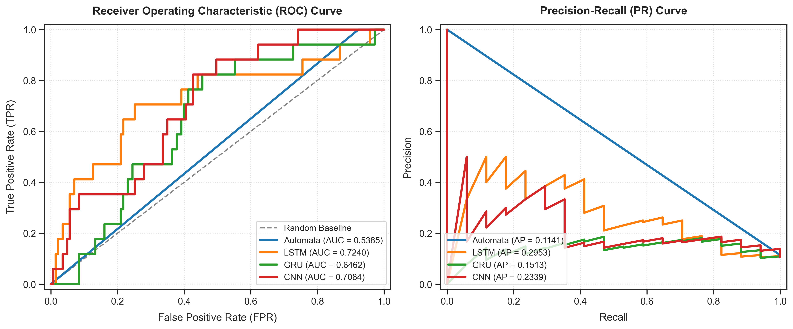
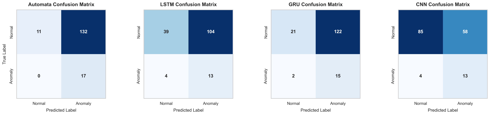
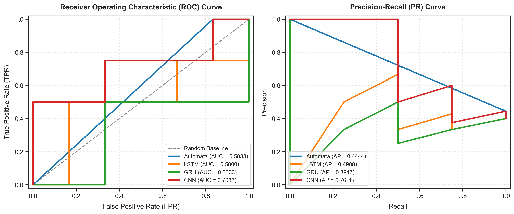
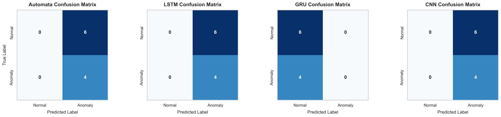
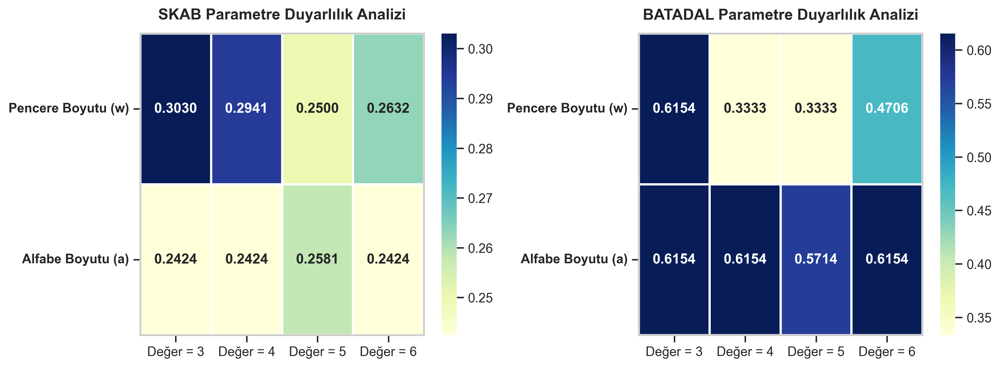
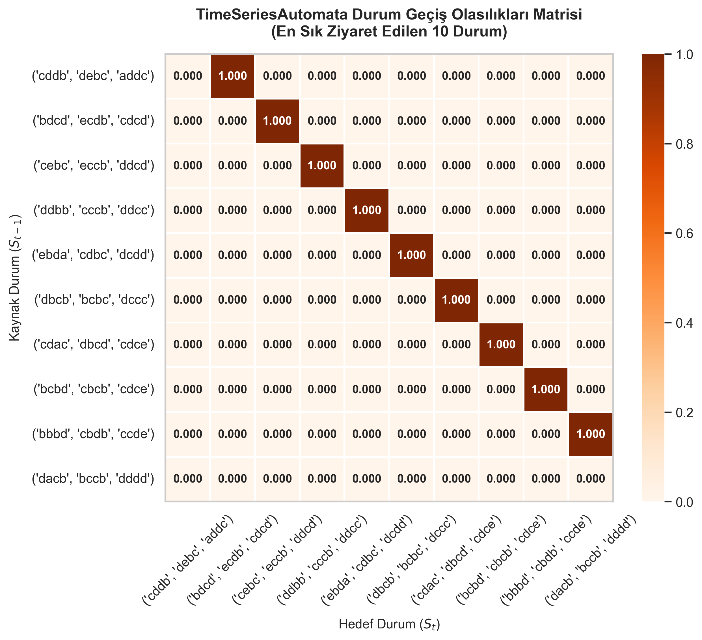

İnteraktif Zaman Serisi Anomali Gezgini
Modellerin anomali tahmin başarılarının ve anlık sinyal grafiklerinin karşılaştırmalı analizi
Automata F1-Score
-
Sembolik Yorumlanabilir Otomat1D-CNN F1-Score
-
Derin Öğrenme TepesiEğitim Süresi Kazancı
~50x Faster
Automata vs LSTM/GRUZaman Serisi & Anomali Deteksiyonu (PCA Birinci Bileşeni - PC1)
Grafik üzerinde herhangi bir noktaya tıklayarak Açıklanabilirlik Konsolunu tetikleyin.
-
Timestamp Detaylı Karar Gerekçelendirmesi
Ölçülen Adım (Time Step):
-
Mevcut Durum (State):
-
Gözlemlenen Örüntü (Pattern):
-
Edit Mesafesi Eşlemesi (Levenshtein):
-
Hesaplanan Yol Olasılığı (Path Probability):
-
Model Kararı:
-
Güven Skoru (Confidence):
-
Karar Gerekçesi (Natural Language Reason):
-
Mevcut Durum Geçiş Aktiviteleri
Olasılıksal otomat üzerindeki Markov geçiş yolları
Tablo 1: Model Performansı ve Stabilitesi (Ortalama F1-score ± Standart Sapma)
| Model | SKAB F1-Score (Mean ± Std) | BATADAL F1-Score (Mean ± Std) |
|---|
Tablo 2: Gürültü Etkisi Analizi (Ortalama F1-Score)
Tablo 3: Cross-Dataset Performans Karşılaştırması (F1-Score)
Tablo 4: TimeSeriesAutomata Parametre Duyarlılık Analizi (Ortalama F1-Score)
Tablo 5: Modellerin Çalışma Süresi (Runtime) Karşılaştırması
| Model | Veri Seti | Eğitim Süresi (sn) | Çıkarım Süresi (sn) |
|---|
Tablo 6: TimeSeriesAutomata ve Derin Öğrenme İstatistiksel Karşılaştırma Matrisi (p-Değerleri)
SKAB ROC ve PR Eğrileri

SKAB Hata Matrisleri

BATADAL ROC ve PR Eğrileri

BATADAL Hata Matrisleri

Parametre Hassasiyet Isı Haritaları

Automata Durum Geçiş Grafiği

Parametre Simülatörü
Aşağıdaki çubukları kaydırarak, pencere ve alfabe boyutlarının F1 başarısı üzerindeki etkisini izleyin.
Simüle Edilen F1-Score
0.0000
Parametreleri değiştirerek başlayın.